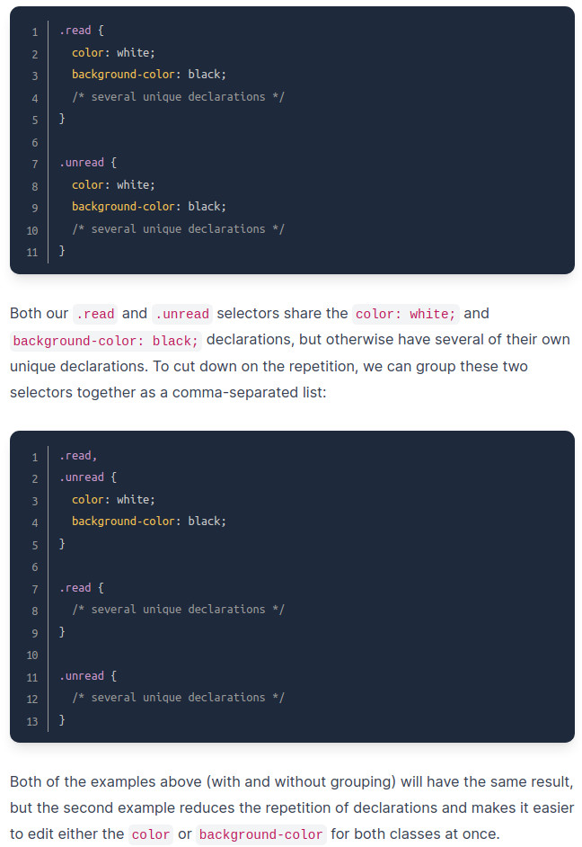

At the most basic level, CSS is made up of various rules. These rules are made up of a selector (more on this in a bit) and a semi-colon separated list of declarations, with each of those declarations being made up of a property:value pair.

HTML elements to which CSS rules are being applied. There are many kinds of selectors. Below are some of the most common.
(*) Will select elements of any type. "* { property: value;}
Will select elements of the specified type ie. " div { property: value; }
Select all elements with the given class, which is just an attribute you place on an HTML element.
The syntax for class selectors: a period immediately followed by the case-sensitive value of the class attribute. Classes aren’t required to be unique, so you can use the same class on as many elements as you want.
Another thing you can do with the class attribute is to add multiple classes to a single element as a space-separated list, such as class="alert-text severe-alert". Since whitespace is used to separate class names like this, you should never use spaces for multi-worded names and should use a hyphen instead.
Similar to class selectors. They select an element with the given ID, which is another attribute you place on an HTML element.
Instead of a period, syntax uses a hash before ID selector.
The major difference between classes and IDs is that an element can only have one ID.
An ID cannot be repeated on a single page, and the ID attribute should not contain any whitespace at all.
Elements that share some of the same declarations can be grouped together, separated by a comma.
.turtle, .frog { color: green;}
Elements that fit one selector or the other would be
Individual selectors would then be listed individually.
You can string together multiple selectors with no spaces.
Doing so will apply to all selectors that has one type and the other.
.turtles.frogs { color: green: }
.turtles#crocs {...}
Does not work with more than one Type Selector, because the lack of syntax leaves no way to specify between the two, and so it will look for a sinlge element with both names combined.
Type = Lizard, type = Newt : chain = LizardNewt ...
Combinators allow multiple selectors to be specified in different, more specific ways than chaining or grouping.
There are 4 types of combinators.
Descendent combinators will choose selectors that fall underneath other selectors, in a parent/ancestor-child relationship.
Syntax is selectors separated by a single space: .parent .child {...}
This would mean it would select only selectors designated .child if they are embedded at any level within the .parent directory.
No limit to how many combinators can be used, though excessive nesting can get messy and tricky.
Many properties in CSS (such as color) that get utilised. Below are some of the most commonly used, and a good place to start.
Color sets an element's color, and Background Color sets the background color.
Each can accept several kinds of values, such as a keyword (ie "red" or "transparent").
Also accept HEX, RGB, and HSL values.
More on CSS colors and how to specify them HERE
"font-family" can be single value, or comma separated list of values that determine an element's font.
Font value is either Font Family Name utilizing quotes such as "Times New Roman" or a Generic Family Name which never use quotes, such as sans-serif;
If a browser does not support the first font in a list, it will go to the next, etc. It is best practice to start with font you want, and end with generic font as fallback.
Sets font size, d'uh
value is number and "px" with no spaces.
"font-size: 24px"
Affects boldness assuming the specified font supports.
font-weight: bold, or a number between 1 and 1000, usually a rounded 100 (bold = 700).
Aligns text horizontally within an element.
Values correspond with familiar phrases (right, left, center)
text-align: center
Default height and width value equal those of original image.
To adjust size with same proportion, set height value to auto.
Specifying both elements of image will prevent the page from shifting after the image loads.
Most common.
Create a separate file for CSS and link it inside the head, with a link element.

href is the relative source of the css file, and rel defines the relationship between the two.
Inside styles file, we have selectors (div and p) followed by curly braces -- this is the "declaration block." Inside the declaration block we place declarations such as "color: white;" where "color" is the property and "white" is the value.
CSS is placed inside "style" (inside alligator brackets) tags, embedded within the head.
No need for external link.
Syntax is same as with external method.
Useful for adding style to single page.
If a lot of declarations made, the html file can get quite large.
Used to add CSS elements directly to an individual html element.
Good for adding a unique style to a single element.
NO selectors used, styles are added directly to html tag within pointy brackets.
Attributes within quotes on same line, instead of in curly braces.
Reasons to avoid this method: